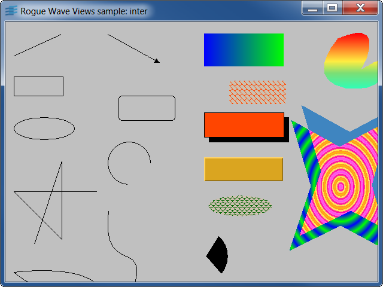

ilvreadLoading and displaying a Rogue Wave Views data file.
This example shows how to use
IlvContainer::readFile to load a Rogue Wave Views data
file.
If objects are associated with interactors, they will be
interactive as expected.
IlvContainerinterDisplaying and interacting with graphic objects.
Shows the use of graphic objects and behaviors.
Click the left mouse button to move objects, and the middle
mouse button to change their size.
Pressing the [Dump PS] button creates a
PostScript dump file of the visible area, in a file called
"dump.ps".
IlvGraphicIlvContainerhullUsing IlPool in a recursive algorithm.
The convex hull of a set of points is computed and dynamically
updated.
Because the algorithm is recursive, we use the Rogue Wave Views
Pools mechanism to allocate and release the memory blocks that
are needed.
IlPoolOf